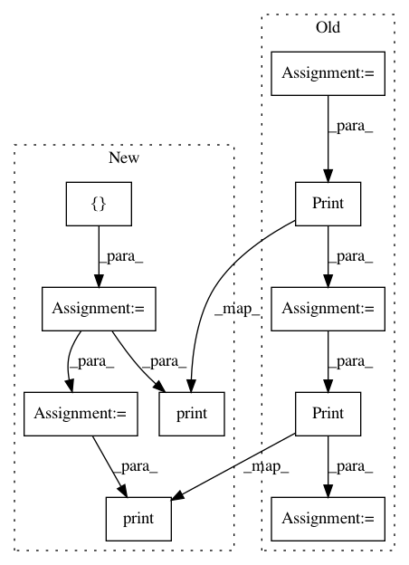

8a49eb334598d6bea0cddf8078a49547775a423a,examples/securenn/network_b.py,PredictionClient,receive_output,#PredictionClient#Any#Any#,161
Before Change
prediction = tf.argmax(likelihoods, axis=1)
eq_values = tf.equal(prediction, tf.cast(y_true, tf.int64))
acc = tf.reduce_mean(tf.cast(eq_values, tf.float32))
op = tf.Print([], [y_true], summarize=self.BATCH_SIZE, message="EXPECT: ")
op = tf.Print(op, [prediction], summarize=self.BATCH_SIZE, message="ACTUAL: ")
op = tf.Print([op], [acc], summarize=self.BATCH_SIZE, message="Acuraccy: ")
return op
model_trainer = ModelTrainer()
After Change
prediction = tf.argmax(likelihoods, axis=1)
eq_values = tf.equal(prediction, tf.cast(y_true, tf.int64))
acc = tf.reduce_mean(tf.cast(eq_values, tf.float32))
op=[]
tf.print([], [y_true], summarize=self.BATCH_SIZE, message="EXPECT: ")
op=op
tf.print(op, [prediction], summarize=self.BATCH_SIZE, message="ACTUAL: ")
op=[op]
tf.print([op], [acc], summarize=self.BATCH_SIZE, message="Acuraccy: ")
return op
model_trainer = ModelTrainer()
In pattern: SUPERPATTERN
Frequency: 3
Non-data size: 10
Instances
Project Name: mortendahl/tf-encrypted
Commit Name: 8a49eb334598d6bea0cddf8078a49547775a423a
Time: 2019-01-02
Author: kamathhrishi@gmail.com
File Name: examples/securenn/network_b.py
Class Name: PredictionClient
Method Name: receive_output
Project Name: mortendahl/tf-encrypted
Commit Name: 8a49eb334598d6bea0cddf8078a49547775a423a
Time: 2019-01-02
Author: kamathhrishi@gmail.com
File Name: examples/securenn/network_d.py
Class Name: PredictionClient
Method Name: receive_output
Project Name: mortendahl/tf-encrypted
Commit Name: 8a49eb334598d6bea0cddf8078a49547775a423a
Time: 2019-01-02
Author: kamathhrishi@gmail.com
File Name: examples/securenn/network_a.py
Class Name: PredictionClient
Method Name: receive_output